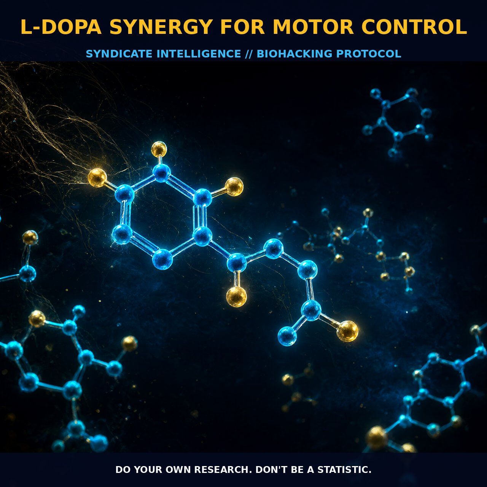

L-DOPA Synergy: Optimizing Dopaminergic Motor Control and Receptor

1. The Mechanism: Bridging Precursors to Catecholamines
L-DOPA acts as the critical biochemical bridge between precursor amino acids and active catecholamine signaling, synthesizing directly from L-tyrosine to form dopamine, norepinephrine, and epinephrine within the central nervous system. Its molecular structure allows it to easily cross the blood-brain barrier when utilized as a nootropic supplement, ensuring that the substrate is available for conversion rather than being lost in peripheral metabolism.
This direct precursor relationship means that supplementing with L-DOPA bypasses rate-limiting enzymatic steps, providing an immediate increase in available dopamine stores that support both motor control and reward pathways. The biological cascade extends beyond simple neurotransmission, as elevated dopamine levels influence hormone secretion and modulate the digestive system alongside the central nervous system effects.
2. Receptor Dynamics and Synaptic Efficiency
The mechanistic action of dopamine is heavily reliant on receptor subtypes, particularly the D1 receptors which exhibit an inverted-U shaped response curve in the prefrontal cortex neurons engaged in working memory. This means that while low-to-moderate levels of L-DOPA enhance cognitive clarity and motor output, excessively high levels can lead to dysregulation rather than continued improvement.
The synthesis pathway is linear and efficient, moving from phenylalanine to tyrosine, then to Dopa, and finally into dopamine before converting to noradrenaline and adrenaline depending on tissue-specific enzymatic activity. This chemical formula ensures that the molecule remains structurally intact during transport, allowing for precise modulation of the basal ganglia circuits which are fundamental to motor control.
3. Biological Leverage: Endocrine and Long-Term Potentiation
The physiological leverage of L-DOPA is most visibly manifested in its ability to support libido and testosterone levels, creating a synergistic loop between dopaminergic drive and endocrine function. Dopamine deficiency is directly correlated with Parkinson’s disease, highlighting the non-negotiable role this neurotransmitter plays in maintaining smooth motor execution and preventing the rigidity associated with depleted synaptic stores.
L-DOPA’s impact extends into long-term potentiation mechanisms, where it interacts with glutamate receptors to facilitate the storage of information in neural pathways. When neuron pathways are reactivated by sensory stimuli or cognitive thought, the presence of adequate dopamine ensures that long-term potentiation remains effective, making previously stored motor patterns easily retrievable.
Users must remain vigilant against dopamine dysregulation syndrome, a condition often observed in patients taking therapeutic doses for Parkinson’s. This syndrome presents with symptoms such as hypersexuality and aggressive behavior, indicating that the optimal zone for motor control must balance elevation against potential over-stimulation of reward circuits.
4. Tactical Protocol Implementation
When integrating L-DOPA into a daily protocol, it is essential to respect its role as a precursor and avoid stacking multiple compounds from the same mechanistic category to prevent receptor desensitization. Starting with lower-to-moderate amounts allows the user to identify their personal threshold for optimal motor control without triggering pathological states like compulsive behavior or hyperactivity.
The timing and combination of L-DOPA can be optimized by considering its half-life and absorption characteristics relative to immediate-release formulations. Because motor fluctuations are a known complication driven by variable absorption, users might consider formulations that provide sustained release to maintain steady-state dopamine levels throughout the day. It is also prudent to distinguish L-DOPA from related compounds like L-Carnosine or beta-alanine, which support long-term health and muscle buffering through entirely different mechanisms.
Prostar Life Hack
Monitor for Over-Dopaminization: Use physical markers such as restlessness or sudden spikes in sexual drive as real-time biological indicators that your baseline dopamine threshold has been met or exceeded. If these symptoms appear, dial back the dosage to avoid receptor desensitization and maintain precise motor modulation without overwhelming the central nervous system.
Prostar Life Hack
Monitor for Over-Dopaminization: Use physical markers such as restlessness or sudden spikes in sexual drive as real-time biological indicators that your baseline dopamine threshold has been met or exceeded. If these symptoms appear, dial back the dosage to avoid receptor desensitization and maintain precise motor modulation without overwhelming the central nervous system.
[ AUTHOR: LEAD TECHNICAL RESEARCHER ]